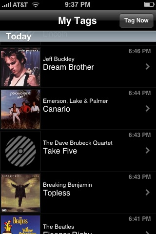

If you have an iPhone and you like music just drop whatever you are
doing and download and install the free Shazam iPhone app. Shazam is a
song-id application. If you hear a song and would like to know the name
and the artist, just fire up the Shazam app, wait a dozen seconds
while Shazam listens, and Shazam will tell you the artist, album and
track. It uses
audio fingerprinting technology to make it all happen.

Now I've seen lots of audio fingerprinters in my day (we've even created
our own here in the labs), but I've never had the chance to use one in
the wild like this, and it is a lot of fun to use - and I get a kick
every time it gets it right (which is almost always). The app really
feels like magic. It also is quite robust to noise and listening
conditions. I tried it with my little laptop speakers while sitting in
the kitchen with the dishwasher running and my lovely wife talking to
me. I've tried it in the car, on the highway with the windows open. It
seemed that as long as I can hear the music, so can Shazam.

In my experience, Shazam is also really accurate - it has almost always
given me the correct answer. Sometimes, it doesn't know the answer, and
it will tell me so - but if it does give me a result, I can count on it
being correct. The Shazam index of music seems to be pretty big. It
was able to identify every song on the local head-banger radio station
with no trouble, along with most things I tried in my personal
collection, including recent releases like the latest Weezer album.
Unsurprisingly, It was not able to identify songs that were pretty deep
into the long tail - it didn't recognize "Harry and the Potters", or any of my Magnatune music.
Shazam keeps track of your 'tags' - the songs you've ID'd with the app.
This lets you keep a log of all of the tracks that you've encountered in
a day so you can follow up later on. It creates links to iTunes so you
can buy the track, as well as links to YouTube videos of the track or
artist. You can even take and attach a photo to a tag to help you
remember the context of the tagging.

The application info page for Shazam says that it only going to be made
available for free for a limited time, so grab it for free while you
can. It really is a cool and useful app.
Update - For the curious, Shazam presented a paper describing
the technology behind their fingerprinter at ISMIR 2003. The paper is a
good read:
An Industial-Strength Audio Search Algorithm (Note that the main ISMIR site is down, so this is a pointer to a cached copy at Columbia).